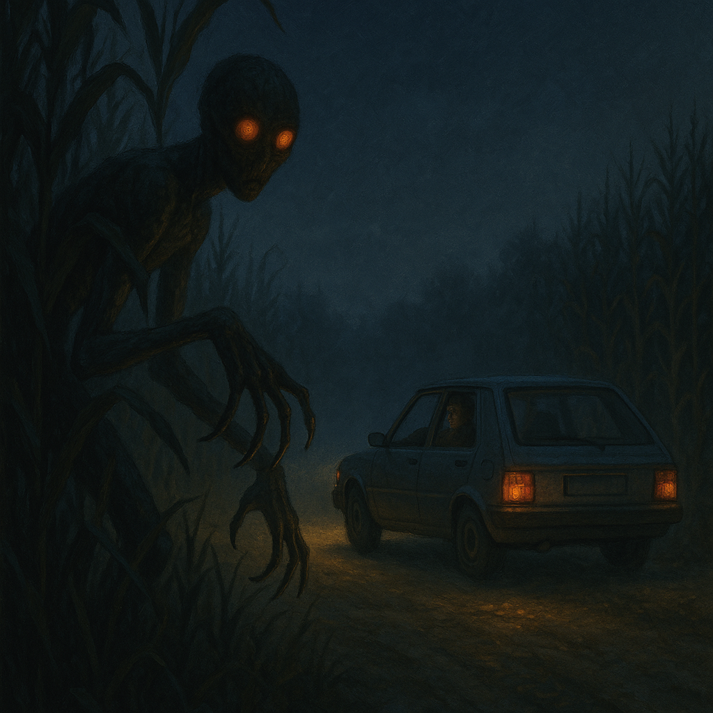

Oci iz njive
„Nikad nisam pričao ovo javno, samo brat zna, i žena. Rekli su mi da ćutim jer ću da ispadnem lud, ali eto... sad više nije ni bitno. Bilo je to avgusta 2006. godine, negde oko tri ujutru. Vraćao sam se kolima iz sela u okolini Bačke Topole, gde smo slavili rođendan kod prijatelja. Bio sam trijezan, vozio sam starog ‘jugića’, sve regularno.
Put je ravan, a sa leve strane ogromna kukuruzišta. Ponegde se vide kuće u daljini, ali generalno — mrak i tišina.
Negde pred krivinu, na jedno 150 metara od mene, primetim nešto kao sedefasto svetlo u visini kolena — odmah sam pomislio da je refleksija na nečijim farovima. Ali nije bilo nikakvog drugog vozila.
Kako sam se približavao, svetlost je postajala jača, ali... bez izvora. Samo stoji. I onda sam video — nešto stoji u njivi.
Bila je visoka figura, možda dva metra, potpuno crna, ali sa onom belom ‘auricom’ oko tela, kao kad gledaš nekog kroz izmaglicu. Lice nije imalo crte — samo oči, koje nisu svetlele, ali su me... gledale.
I kad kažem ‘gledale’, mislim bukvalno — kao da mi je u glavi. Kao da zna gde sam bio pre tri sata. Osetio sam tup pritisak u grudima, i kočenje ruku. Auto je samo stao. Radio i svetla su radili, ali papučica gasa nije reagovala. Kao da me neko zaustavio bez dodira.
Stajao sam tako možda 10 sekundi. Figura nije uradila ništa, samo je postojala. I onda — zatrepta svetlost, kao da se prelomilo staklo u vazduhu, i nestala je. Odjednom je sve bilo normalno. Auto je krenuo bez problema.
Nisam imao rane, niti ‘belu noć’, niti ožiljke. Samo osećaj da me neko zna.
Otad, ne vozim noću. I ne ulazim u kukuruz. Nikad.“
